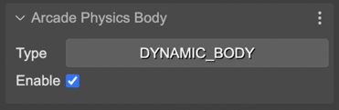
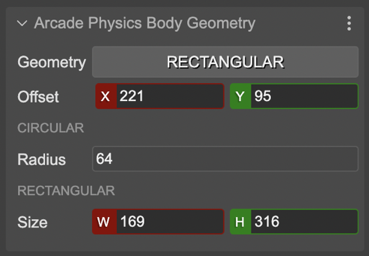
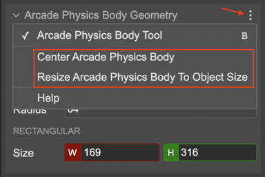
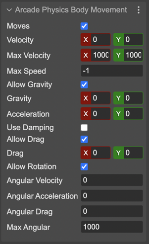
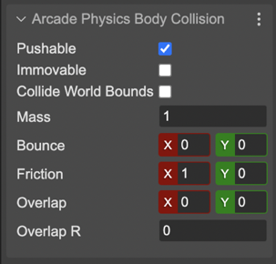

Arcade physics body properties
Contents
When you select an object, the Inspector view shows the editors for editing the Arcade body of the object.
The properties are grouped by sections:
Arcade Physics Body section
It allows changing the type of body to dynamic or static. And set the enable flag:
Arcade Physics Body Geometry section
This section contains the properties for setting the offset & size of the body. You can select the body’s shape in the Geometry parameter. If the body is rectangular, you can change its Size. If the body is circular, you can change its Radius. In both cases, you can change the Offset.
Another way of changing the body’s offset and size is activating the Arcade Physics Body Tool.
Also, in the scene context menu, in the Arcade Physics, there are the options Center Body and Resize Body To Object Size. Those commands are also available in the three-dots menu of the properties section:
The Center Arcade Body commands places the body at the center of the object. The Resize Body To Object Size command centers the body and resizes it to fill the whole object. If the body is circular, it changes the radius to fill the object’s width.
Arcade Physics Body Movement section
This sections contains all body’s properties related to the movement:
Arcade Physics Body Collision section
This section contains the body’s properties related to collision:
